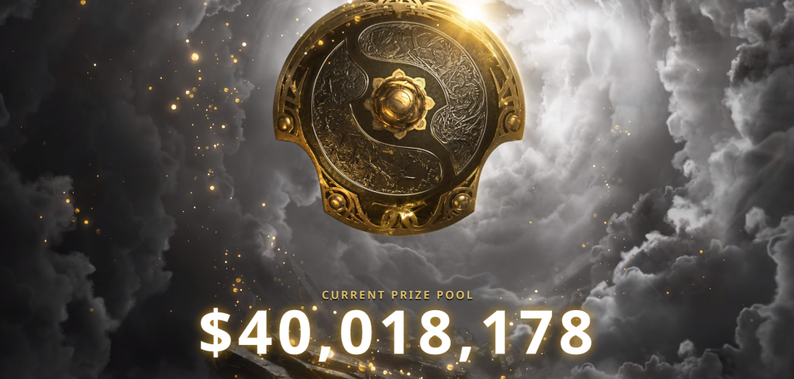

Dota 2
Dota 2 is a multiplayer online battle arena (MOBA) video game developed and published by Valve. The game is a sequel to Defense of the Ancients (DotA), which was a community-created mod for Blizzard Entertainment's Warcraft III: Reign of Chaos. Dota 2 is played in matches between two teams of five players, with each team occupying and defending their own separate base on the map. Each of the ten players independently controls a powerful character, known as a "hero", who all have unique abilities and differing styles of play. During a match players collect experience points and items for their heroes to successfully defeat the opposing team's heroes in player versus player combat. A team wins by being the first to destroy the other team's "Ancient", a large structure located within their base.
Gameplay

Dota 2 is a multiplayer online battle arena (MOBA) video game developed and published by Valve. The game is a sequel to Defense of the Ancients (DotA), which was a community-created mod for Blizzard Entertainment's Warcraft III: Reign of Chaos. Dota 2 is played in matches between two teams of five players, with each team occupying and defending their own separate base on the map. Each of the ten players independently controls a powerful character, known as a "hero", who all have unique abilities and differing styles of play. During a match players collect experience points and items for their heroes to successfully defeat the opposing team's heroes in player versus player combat. A team wins by being the first to destroy the other team's "Ancient", a large structure located within their base.
Developmente
The Dota series began in 2003 with Defense of the Ancients (DotA)—a mod for Blizzard Entertainment's Warcraft III: Reign of Chaos—created by the pseudonymous designer "Eul".[40] An expansion pack for Warcraft III, The Frozen Throne, was released later that year; a series of Defense of the Ancients clone mods for the new game competed for popularity. DotA: Allstars by Steve Feak was the most successful,[41] and Feak, with his friend Steve Mescon, created the official Defense of the Ancients community website and the holding company DotA-Allstars, LLC.[42] When Feak retired from DotA: Allstars in 2005, a friend, under the pseudonym IceFrog, became its lead designer.[43] By the late 2000s, Defense of the Ancients became one of the most popular mods worldwide, as well as a prominent esports game.[44] IceFrog and Mescon later had a falling out in May 2009, which prompted the former to establish a new community website at playdota.com.[45] Valve's interest in the Dota intellectual property began when several veteran employees, including Team Fortress 2Robin Walker
Dota Reburn
In June 2015, Valve announced that the entirety of Dota 2 would be ported over to their Source 2 game engine in an update called Dota 2 Reborn.[95] Reborn was first released as an opt-in beta update that same month,[96] and officially replaced the original client in September 2015, making it the first game to use the engine.[97] Reborn included a new user interface framework design, ability for custom game modes created by the community, and the full replacement of the original Source engine with Source 2.[98] Largely attributed to technical difficulties players experienced with the update, the global player base experienced a sharp drop of approximately sixteen percent the month following its release.[99] However, after various updates and patches, over a million concurrent players were playing again by the beginning of 2016, with that number being the largest in nearly a year.[100] The move to Source 2 also allowed the use of the Vulkan graphics API, released as an optional feature in May 2016, making Dota 2 one of the first games to use it.
Esports
To ensure that enough Defense of the Ancients players would take up Dota 2 and to promote the game to a new audience, Valve invited sixteen accomplished Defense of the Ancients esports teams to compete at a Dota 2-specific tournament at Gamescom in August 2011, which later became an annually held event known as The International.[127] From The International 2013 onward, its prize pool began to be crowdfunded through a type of in-game battle pass called the "Compendium", which raises money from players buying them and connected lootboxes to get exclusive in-game cosmetics and other bonuses offered through them.[128][129] 25% of all the revenue made from Compendiums go directly to the prize pool, with sales from the 2013 battle pass raising over US$2.8 million, which made it the largest prize pool in esports history at the time.[130][131] Each iteration of The International since then has surpassed the previous one's prize pool, with the most recent one, The International 2021, having one at $40 million